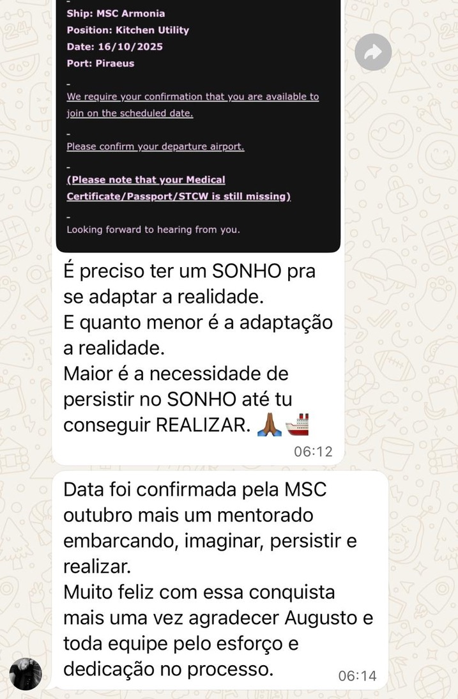
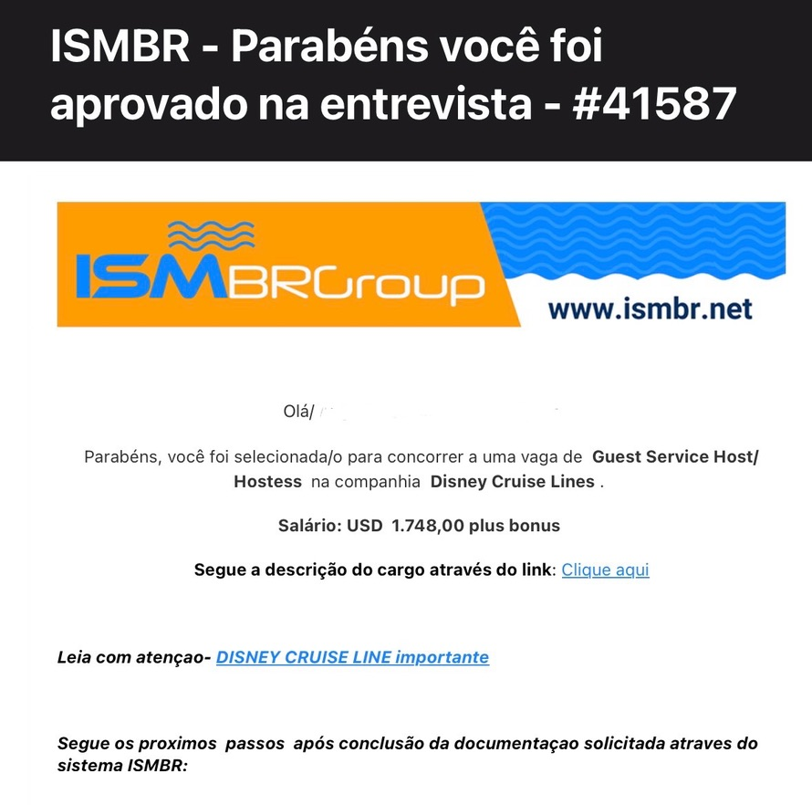
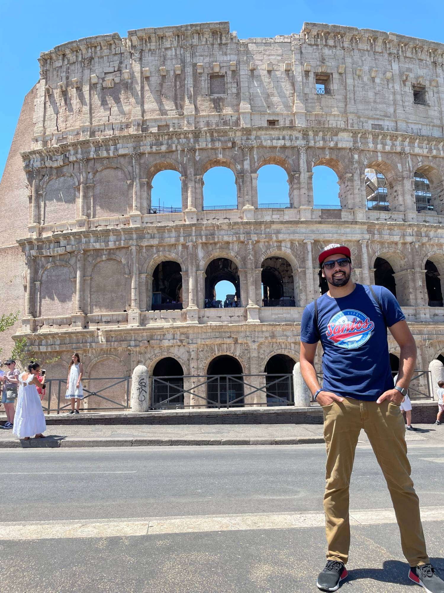

“Já mandei o currículo e ninguém respondeu.”
Você não sabe se o problema é o currículo, a vaga ou a forma como se apresentou. Enquanto isso, o tempo passa e a vaga vai para outra pessoa.
Currículo que é selecionado pela agência e pela empresa, preparo para a entrevista e o inglês que você usa a bordo. Um caminho claro, do primeiro passo ao embarque, para você não perder tempo nem dinheiro com tentativa e erro.
Você não sabe se o problema é o currículo, a vaga ou a forma como se apresentou. Enquanto isso, o tempo passa e a vaga vai para outra pessoa.
Sem um caminho claro, qualquer investimento parece uma aposta. Você quer saber exatamente o que fazer antes de gastar.
Você entende a pergunta, mas a resposta não sai. Na entrevista, quem fala com segurança é quem é escolhido.
Documentos, currículo, etapas, o que dizer e o que não dizer. Tudo isso parece um processo que ninguém explica direito.
Eu descobri, na prática, cada etapa do processo seletivo. Quanto tempo levou, quais erros eu cometi e o que realmente pesa na hora de ser escolhido.
Depois que virei mentor, vi tripulantes embarcarem com um caminho claro. Economizando dinheiro, economizando tempo e sabendo exatamente o que precisava ser feito. O Acelerando nasceu para você não passar pelo mesmo caminho longo que eu passei.
Um caminho completo, na ordem em que você precisa seguir.
Descubra seu nível de inglês e qual posição a bordo combina com você. Depois escolha seu foco: currículo, entrevista ou inglês.
Crie um CV que é selecionado pela agência e pela empresa, mesmo com pouca experiência. Veja os erros que tiram você do processo, os documentos obrigatórios e os templates prontos.
As perguntas mais comuns, de competência, hipotéticas e comportamentais. Simulações completas, dicas para a entrevista online e o maior erro que reprova candidatos.
Inglês do básico ao intermediário e o vocabulário real do dia a dia a bordo, com treino de ouvido com tripulantes de vários países.
Para não cometer o erro que tira você da seleção.
Pronto para mandar o seu currículo com profissionalismo.
Para ter as respostas na ponta da língua.
O guia prático para o embarque em cruzeiros.
Todas as etapas do processo seletivo, quanto gastar com documentação, as agências e empresas para aplicar e o que esperar na primeira semana a bordo.


Navios, portos e uma rotina de embarque que muita gente sonha em conhecer.

Não sabe por onde começar o processo seletivo
Não sabe montar um currículo que seja selecionado pela agência e pela empresa
Tem inglês básico e precisa de um caminho para chegar à entrevista
Quer um plano claro, sem perder tempo com cursos genéricos
US$ 1.000 por mês
é aproximadamente R$ 5.000 por mês. Valor de referência, que varia com o câmbio e com o cargo.
Esse ganho mensal é mais de 25 vezes o valor do curso.
O caminho completo para sair do zero e chegar à entrevista preparado.
12x de R$ 20,37
no cartão, ou R$ 197 à vista
✓ Sem risco: 7 dias de garantia
Quero acelerar meu embarque12 meses de acesso à trilha, e o módulo de currículo é vitalício. Após a confirmação do pagamento, o acesso é enviado pela plataforma de compra.
Você testa o curso por 7 dias. Se não for para você, a garantia cobre a sua compra.
Sim. O curso tem uma trilha de inglês do básico ao intermediário, e um nivelamento para você começar pelo ponto certo.
12 meses para toda a trilha. O conteúdo do currículo tem acesso vitalício, conforme a descrição do módulo.
Sim. Os conteúdos são gravados e você tem suporte pelo WhatsApp.
Serve. Há aulas específicas sobre como adaptar o currículo mesmo com pouca experiência.
Você estuda no seu ritmo, com conteúdos gravados. Não há horários fixos para acompanhar.
Não. O curso prepara você em cada etapa do processo seletivo, mas a contratação depende da empresa.
Escolha o caminho certo agora, em vez de descobrir os erros depois.